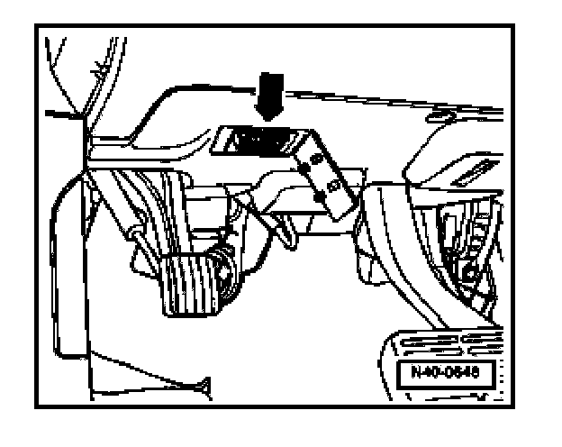

Scan Tool Testing and Procedures
VAS 5051 Vehicle Diagnostic Testing And Information System, Connecting
- Switch off all electrical consumers.
- Pull on handbrake.
- Automatic transmission selector lever: position "P" or "N".
- Manual transmission: in neutral.
- Ignition switched off.

- Open cover for Data Link Connector (DLC) -1- below lower left instrument panel.
- connect VAS 5051 using adapter cable VAS 5051/3.
- Switch on ignition.
NOTE: If VAS 5051 display is not as per display in the work sequence:
- Select operating mode "Guided Fault Finding"
After the DTC memory of all control modules has been checked:
- Press "Go to" button
- Select "Function/Component Selection"
- Select: "Body (Repair Group 01; 27; 50 to 97)"
- Select: "Electrical System (Repair Group 01; 27; 90 to 97)"
- Select: "01 - Systems capable of self-diagnosis
- Select: "Dash panel insert" (instrument cluster)
- Select: "Functions of instrument cluster"
- Select: "Instrument cluster, replacing"
- Follow tester prompts.